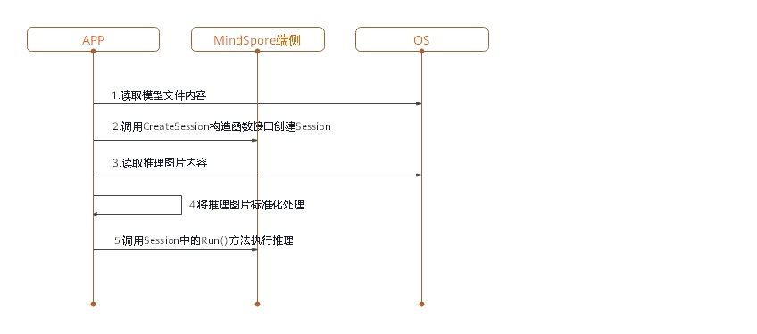

端侧推理
概述
MindSpore Predict是一个轻量级的深度神经网络推理引擎，提供了将MindSpore训练出的模型在端侧进行推理的功能。本教程介绍MindSpore Predict的编译方法和使用指南。
编译方法
用户需要自行编译，这里介绍在Ubuntu环境下进行交叉编译的具体步骤。
环境要求如下：
硬件要求
内存1GB以上
硬盘空间10GB以上
系统要求
系统：Ubuntu = 16.04.02LTS（验证可用）
内核：4.4.0-62-generic（验证可用）
软件依赖
numpy, decorator和scipy可以通过pip安装，参考命令如下。
pip3 install numpy==1.16 decorator scipy
编译步骤如下：
配置环境变量。
export LLVM_PATH={$LLVM_PATH}/clang+llvm-8.0.0-x86_64-linux-gnu-ubuntu-16.04/bin/llvm-config #设定llvm路径 export ANDROID_NDK={$NDK_PATH}/android-ndk-r16b #设定ndk路径
从代码仓下载源码。
git clone https://gitee.com/mindspore/mindspore.git -b r0.1
在源码根目录下，执行如下命令编译MindSpore Predict。-I为编译MindSpore Predict的编译参数，-I的参数为目标端侧平台，目前仅支持安卓arm64平台。
sh build.sh -I arm64
获取编译结果。
进入源码的predict/output目录，即可查看生成的压缩包，包名为MSPredict-{版本号}-{HOST平台}_{DEVICE平台}.tar.gz，例如：MSPredict-0.1.0-linux_aarch64.tar.gz。 该压缩包包含以下目录：
include：MindSpore Predict的头文件。
lib：MindSpore Predict的动态库。
端侧推理使用
在APP的APK工程中使用MindSpore对进行模型推理时，模型推理前需要对输入进行必要的前处理，比如将图片转换成MindSpore推理要求的tensor格式、对图片进行resize等处理。在MindSpore完成模型推理后，对模型推理的结果进行后处理，并将处理的输出发送给APP应用。
本章主要描述用户如何使用MindSpore进行模型推理，APK工程的搭建和模型推理的前后处理，不在此列举。
MindSpore进行端侧模型推理的步骤如下。
生成端侧模型文件
加载训练完毕所生成的CheckPoint文件至定义好的网络中。
param_dict = load_checkpoint(ckpoint_file_name=ckpt_file_path) load_param_into_net(net, param_dict)
调用
export接口，导出端侧模型文件(.ms)。export(net, input_data, file_name="./lenet.ms", file_format='LITE')
以LeNet网络为例，生成的端侧模型文件为lenet.ms，完整示例代码lenet.py如下。
import os
import numpy as np
import mindspore.nn as nn
import mindspore.ops.operations as P
import mindspore.context as context
from mindspore.common.tensor import Tensor
from mindspore.train.serialization import export, load_checkpoint, load_param_into_net
class LeNet(nn.Cell):
def __init__(self):
super(LeNet, self).__init__()
self.relu = P.ReLU()
self.batch_size = 32
self.conv1 = nn.Conv2d(1, 6, kernel_size=5, stride=1, padding=0, has_bias=False, pad_mode='valid')
self.conv2 = nn.Conv2d(6, 16, kernel_size=5, stride=1, padding=0, has_bias=False, pad_mode='valid')
self.pool = nn.MaxPool2d(kernel_size=2, stride=2)
self.reshape = P.Reshape()
self.fc1 = nn.Dense(400, 120)
self.fc2 = nn.Dense(120, 84)
self.fc3 = nn.Dense(84, 10)
def construct(self, input_x):
output = self.conv1(input_x)
output = self.relu(output)
output = self.pool(output)
output = self.conv2(output)
output = self.relu(output)
output = self.pool(output)
output = self.reshape(output, (self.batch_size, -1))
output = self.fc1(output)
output = self.relu(output)
output = self.fc2(output)
output = self.relu(output)
output = self.fc3(output)
return output
if __name__ == '__main__':
context.set_context(mode=context.GRAPH_MODE, device_target="Ascend")
seed = 0
np.random.seed(seed)
origin_data = np.random.uniform(low=0, high=255, size=(32, 1, 32, 32)).astype(np.float32)
origin_data.tofile("lenet.bin")
input_data = Tensor(origin_data)
net = LeNet()
ckpt_file_path = "path_to/lenet.ckpt"
is_ckpt_exist = os.path.exists(ckpt_file_path)
if is_ckpt_exist:
param_dict = load_checkpoint(ckpoint_file_name=ckpt_file_path)
load_param_into_net(net, param_dict)
export(net, input_data, file_name="./lenet.ms", file_format='LITE')
print("export model success.")
else:
print("checkpoint file does not exist.")
在端侧实现推理
将.ms模型文件和图片数据作为输入，创建session在端侧实现推理。

图1：端侧推理时序图
加载.ms模型文件到内存缓冲区，ReadFile函数功能需要用户自行实现。
// read model file std::string modelPath = "./models/lenet/lenet.ms"; size_t graphSize = 0; /* ReadFile() here is a dummy function */ char *graphBuf = ReadFile(modelPath.c_str(), graphSize);
调用CreateSession接口创建Session，创建完成后可释放内存缓冲区中的模型文件。
// create session Context ctx; std::shared_ptr<Session> session = CreateSession(graphBuf, graphSize, ctx); free(graphBuf);
从内存缓冲区中读取推理的输入数据，调用SetData()接口将输入数据设置到input tensor中。
// load input buffer size_t inputSize = 0; std::string imagePath = "./data/input/lenet.bin"; char *inputBuf = ReadFile(imagePath.c_str(), inputSize); //get input tensors std::vector<Tensor *> inputs = session->GetInput(); //set input buffer inputs[0]->SetData(inputBuf);
调用Session中的Run()接口执行推理。
// session run int ret = session->Run(inputs);
调用GetAllOutput()接口获取输出。
// get output std::map<std::string, std::vector<Tensor *>> outputs = session->GetAllOutput();
调用Tensor的GetData()接口获取输出数据。
// get output data float *data = nullptr; for (auto output : outputs) { auto tensors = output.second; for (auto tensor : tensors) { data = (float *)(tensor->GetData()); } }
推理结束释放input tensor和output tensor。
// free inputs and outputs for (auto &input : inputs) { delete input; } inputs.clear(); for (auto &output : outputs) { for (auto &outputTensor : output.second) { delete outputTensor; } } outputs.clear();
选取LeNet网络，推理输入为“lenet.bin”，完整示例代码lenet.cpp如下。
MindSpore Predict使用FlatBuffers定义模型，解析模型需要使用到FlatBuffers头文件，因此用户需要自行配置FlatBuffers头文件。
具体做法：将MindSpore根目录/third_party/flatbuffers/include下的flatbuffers文件夹拷贝到session.h的同级目录。
#include <string>
#include <vector>
#include "context.h"
#include "session.h"
#include "tensor.h"
#include "errorcode.h"
using namespace mindspore::predict;
int main() {
std::string modelPath = "./models/lenet/lenet.ms";
std::string imagePath = "./data/input/lenet.bin";
// read model file
size_t graphSize = 0;
/* ReadFile() here is a dummy function */
char *graphBuf = ReadFile(modelPath.c_str(), graphSize);
if (graphBuf == nullptr) {
return -1;
}
// create session
Context ctx;
auto session = CreateSession(graphBuf, graphSize, ctx);
if (session == nullptr) {
free(graphBuf);
return -1;
}
free(graphBuf);
// load input buf
size_t inputSize = 0;
char *inputBuf = ReadFile(imagePath.c_str(), inputSize);
if (inputBuf == nullptr) {
return -1;
}
auto inputs = session->GetInput();
inputs[0]->SetData(inputBuf);
// session run
auto ret = session->Run(inputs);
if (ret != RET_OK) {
printf("run failed, error: %d\n", ret);
for (auto &input : inputs) {
delete input;
}
return -1;
}
// get output
auto outputs = session->GetAllOutput();
// get output data
float *data = nullptr;
for (auto output : outputs) {
auto tensors = output.second;
for (auto tensor : tensors) {
data = (float *)(tensor->GetData());
//print the contents of the data
for (size_t i = 0; i < tensor->GetElementSize(); ++i) {
printf(" %f ", data[i]);
}
printf("\n");
}
}
// free inputs and outputs
for (auto &input : inputs) {
delete input;
}
inputs.clear();
for (auto &output : outputs) {
for (auto &outputTensor : output.second) {
delete outputTensor;
}
}
outputs.clear();
return 0;
}